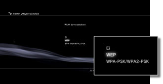
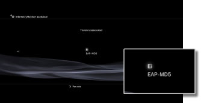
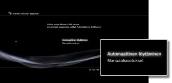
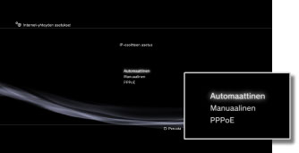
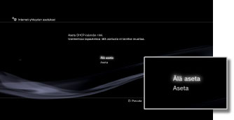
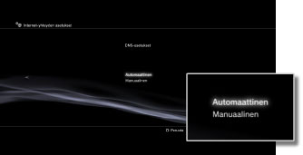
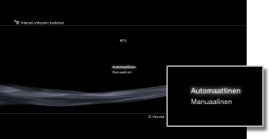
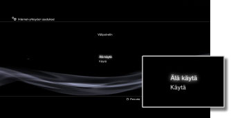
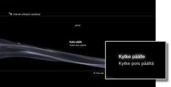

Asetukset > Verkkoasetukset > Internet-yhteyden asetukset (lisäasetukset)
Internet-yhteyden asetukset (lisäasetukset)
Jos et voi muodostaa yhteyttä Internetiin perusasetuksilla, voit muuttaa asetuksia. Muuta asetuksia siten, että ne vastaavat verkkoympäristöäsi.
1. |
Valitse |
|---|---|
2. |
Valitse [Internet-yhteyden asetukset]. |
3. |
Valitse [Omat asetukset]. |
 (Asetukset) >
(Asetukset) >  (Verkkoasetukset).
(Verkkoasetukset).Yhteystapa
Määritä Internet-yhteyden muodostamistapa. Tämä asetus on käytettävissä vain sellaisissa PS3™-järjestelmissä, joissa on WLAN-toiminto.

| Lähiverkko | Langallisen yhteyden muodostaminen Ethernet-kaapelin avulla |
|---|---|
| Langaton | Muodosta langaton yhteys WLAN-yhteyden kautta |
WLAN-asetukset
Valitse tukiaseman SSID. Tätä toimintoa voi käyttää vain PS3™-järjestelmissä, joissa on langaton lähiverkkotoiminto.

| Haku | Etsi lähin tukiasema. Valitse tämä asetus, jos et tiedä tukiaseman SSID:tä. Järjestelmä havaitsee lähellä olevat tukiasemat ja näyttää tietoja SSID:stä ja suojausasetuksista. |
|---|---|
| Syötä manuaalisesti | Valitse tukiasema kirjoittamalla sen SSID näppäimistöllä. Valitse tämä asetus, jos tiedät SSID:n. |
| Automaattinen | Käytä tukiaseman automaattista määritystoimintoa. Tämä asetus on käytettävissä vain alueilla, joilla myytävät PS3™-järjestelmät tukevat tätä toimintoa. Valitse tämä asetus, kun käytät tukiasemaa, joka tukee automaattista määritystä. Noudata näytössä näkyviä ohjeita. |
WLAN turva-asetukset
Valitse tukiaseman salausavain. Tätä toimintoa voi käyttää vain PS3™-järjestelmissä, joissa on langaton lähiverkkotoiminto.

| Ei | Älä valitse salausavainta. |
|---|---|
| WEP | Valitse salausavain. Salausavaimen voi kirjoittaa seuraavassa näytössä. Salausavaimen merkit näytetään tähtimerkkeinä. |
| WPA-PSK / WPA2-PSK |
Todennusasetukset
Nämä asetukset ovat käytettävissä vain Koreassa myydyissä PS3™-järjestelmissä ja vain PS3™-järjestelmissä, joissa on langaton lähiverkkotoiminto.

| Ei | Älä määritä todennustietoja. |
|---|---|
| EAP-MD5 | Määritä todennustiedot, kun käytät julkisia WLAN-palveluita. Kirjoita käyttäjätunnuksesi ja salasanasi seuraavassa näytössä. Saat lisätietoja julkisen WLAN-palvelun tarjoajan antamista tiedoista. |
Ethernet-käyttötila
Valitse Ethernet-tiedonsiirron nopeus ja käyttötapaa. Asetukseksi kannattaa yleensä valita [Automaattinen löytäminen].

| Automaattinen löytäminen | Perusasetukset määritetään automaattisesti. |
|---|---|
| Manuaaliasetukset | Muuta Ethernet-tiedonsiirron nopeutta ja käyttötapaa. |
IP-osoitteen asetus
Määritä IP-osoitteen hakemisen tapa, jota käytetään Internet-yhteyden muodostamiseen.

| Automaattinen | Käytä DHCP-palvelimen varaamaa IP-osoitetta. Voit kirjoittaa DHCP-palvelimen nimen seuraavassa näytössä. |
|---|---|
| Manuaalinen | Määritä IP-osoite manuaalisesti. Voit kirjoittaa IP-osoitteen, aliverkon peitteen, oletusreitittimen sekä ensi- ja toissijaisen DNS-palvelimen arvot seuraavassa näytössä. |
| PPPoE | Muodosta Internet-yhteys PPPoE-yhteyskäytännön avulla. Kirjoita käyttäjätunnuksesi ja salasanasi seuraavassa näytössä. |
DHCP
Aseta DHCP-isäntänimi. Valitse normaalisti [Älä aseta].

| Älä aseta | Älä aseta DHCP-isäntänimeä. |
|---|---|
| Aseta | Aseta DHCP-isäntänimi. |
DNS-asetukset
Määritä DNS-palvelin.

| Automaattinen | Hae DNS-palvelimen osoite automaattisesti. |
|---|---|
| Manuaalinen | Määritä DNS-palvelimen osoite manuaalisesti. |
MTU
Määritä tiedonsiirrossa käytettävä MTU-arvo. Asetukseksi kannattaa yleensä valita [Automaattinen].

| Automaattinen | Määritä MTU-arvo automaattisesti. |
|---|---|
| Manuaalinen | Määritä yhdessä lähetyksessä lähetettävien tietopakettien enimmäiskoko tavuina. |
Välipalvelin
Määritä käytettävä välityspalvelin.

| Älä käytä | Älä käytä välityspalvelinta. |
|---|---|
| Käytä | Käytä välityspalvelinta. Voit kirjoittaa välityspalvelimen osoitteen ja portin numeron seuraavassa näytössä. |
UPnP
Voit ottaa UPnP-toiminnon (Universal Plug and Play) käyttöön tai poistaa sen käytöstä.

| Kytke päälle | Ota UPnP käyttöön. |
|---|---|
| Kytke pois päältä | Poista UPnP käytöstä. |
Vihje
Yhteys muihin käyttäjiin voi olla rajoitettu käytettäessä ääni- tai videochatia tai pelien viestintäominaisuuksia, jos asetuksena on [Kytke pois päältä].